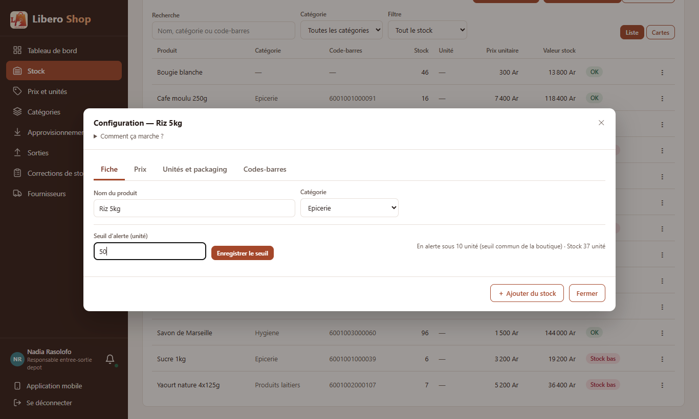
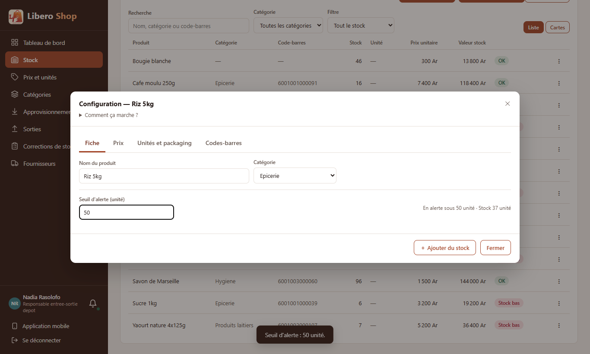
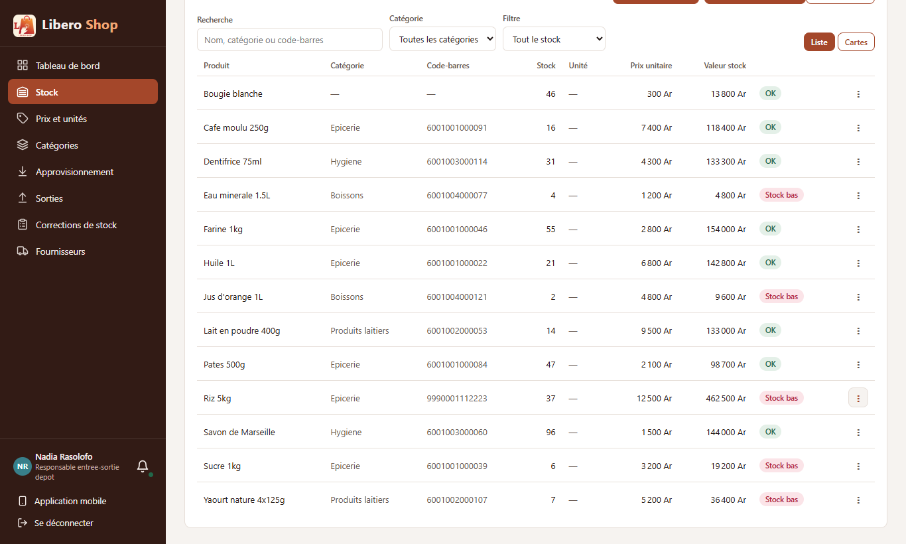

Seuil de stock bas par produit
- Chaque produit peut avoir son propre seuil d'alerte : 50 sacs de riz, 2 cartons d'huile.
- Sans seuil propre, le seuil commun de 10 s'applique, comme avant : rien ne change pour les produits non réglés.
- Le seuil se règle dans la configuration du produit, onglet Fiche ; un champ vide rend le seuil commun.
- Les listes, les tableaux de bord et le filtre « Alertes uniquement » suivent tous la même règle, à un seul endroit du serveur (
StockPolicy). - Les écrans ouverts voient le changement tout de suite.
1. Le problème
Un produit était « en alerte » sous 10 unités, quel qu'il soit. Pour le riz vendu par dizaines de sacs par jour, l'alerte arrivait trop tard ; pour un produit vendu une fois par mois, elle restait allumée en permanence.
2. Ce qui a été fait
Le seuil est compté dans l'unité de base du produit (celle du stock). Il est gardé dans une nouvelle colonne du produit, vide par défaut ; la base existante n'a rien à reprendre. La requête des produits en alerte (tableaux de bord) compare chaque produit à son propre seuil, ou au seuil commun.
3. Le résultat en images
Nadia — responsable de dépôt Le riz se vend vite : alerte sous 50.



4. À éviter / attendu
// le seuil répété dans chaque écran
product.getStockQuantity()
.compareTo(BigDecimal.TEN) < 0// une seule règle
StockPolicy.isLowStock(product)
// = stock < thresholdOf(product)5. Tableau récapitulatif
| Fichier | Changement |
|---|---|
backend/…/entity/Product.java | nouvelle colonne lowStockThreshold, vide par défaut |
backend/…/service/StockPolicy.java | thresholdOf : seuil propre ou commun ; isLowStock l'utilise |
backend/…/repository/ProductRepository.java | produits en alerte : chacun selon son seuil |
backend/…/service/ProductEditService.java | changeAlertThreshold : négatif refusé, écrans prévenus |
backend/…/web/ProductController.java, web/dto/AlertThresholdRequest.java | PUT /api/products/{id}/alert-threshold |
backend/…/web/dto/ProductResponse.java, ProductUnitsResponse.java | le seuil appliqué, le seuil propre et le seuil commun |
ui/…/shared/components/product-units-dialog.component.ts | champ « Seuil d'alerte » dans l'onglet Fiche |
ui/…/core/api/catalog.api.ts, core/models/* | appel et types |
| Règle | Test |
|---|---|
| Sans seuil propre : 10 ; un seuil propre plus haut ou plus bas s'applique ; 0 n'alerte jamais | StockPolicyTest |
| Le seuil est gardé, vide rend le commun, négatif refusé ; écrans prévenus | ProductEditServiceTest — seuilDAlertePropreAuProduit, seuilVideRendLeSeuilCommun, seuilNegatifRefuse |
| Le champ enregistre le seuil, la virgule lue comme un point | product-units-dialog.component.spec.ts |
Tests : serveur au vert (602 tests), interface au vert (237 tests).
Signalé : ProductEditService renvoie des DTO de web/dto (déjà le cas avant) ; la nouvelle méthode suit
ce qui existe pour rester cohérente. À reprendre dans un point dédié à la séparation des couches.